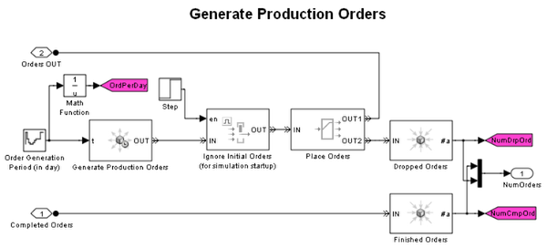
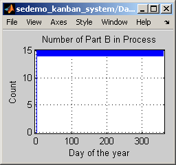

Kanban Production System
Contents
Overview
This model simulates a production system that uses kanbans to manage production activities. Analysis of simulation results highlights problems of the system and suggests ways to improve its performance.
Structure of the Model
The modeled production system includes two part suppliers and an assembly line. The part suppliers use raw materials to manufacture parts. Finished parts are transported to the assembly line to fabricate final products. Completed products are shipped to distributors to fill production orders.
At the top level of the model:
- The Generate Production Orders subsystem simulates the generation of production orders.
- The Assembly Line subsystem fills a production order by assembling two types of parts (referred to as part A and part B) into final products.
- The Part A Supplier subsystem and Part B Supplier subsystem manufacture the parts needed for final assembly.
- The Material A Supplier subsystem and Material B Supplier subsystem replenish the raw materials consumed during parts production.
Kanban Circulation
"Kanban" comes from the Japanese word for "signboard". A kanban production system is a pull system that determines its production according to the actual demand of the customers. In a such system, kanbans are used as demand signals that propagate through the production system to trigger and regulate production activities, such as processing and storage.
This model simulates the circulation of two types of kanbans: withdrawal kanbans and work-in-process kanbans.
- Withdrawal kanbans manage inventory. Withdrawal kanbans grant the right to withdraw parts from part suppliers to replenish inventory. Factory workers cannot remove the withdrawal kanban from a part in the existing inventory until the part is consumed. During production, the number of withdrawal kanbans issued for a type of parts is fixed. This limits the inventory size for that type of parts.
- Work-in-process kanbans manage production. Work-in-process kanbans grant the right to manufacture parts in type and quantity as specified. After a part is produced, factory workers cannot remove the work-in-process kanban from the part until the part is withdrawn for final assembly. During production, the number of work-in-process kanbans issued for a type of parts is fixed. This limits the number of parts being processed by a part supplier.
Circulation of withdrawal kanbans for part A is modeled by the following blocks and subsystems:
- Entity Combiner block labeled Obtain Withdrawal Kanban in Part A Supplier subsystem
- Entity Splitter block labeled Release Withdrawal Kanban A in Assembly Line subsystem
- Withdrawal Kanban A subsystem
The figures below show the Part A Supplier subsystem and Assembly Line subsystem.
During simulation, the block labeled Obtain Withdrawal Kanban in the Part A Supplier subsystem must obtain a withdrawal kanban before a part A is transported and stored for final assembly. When a part A in storage is consumed in final assembly, the block labeled Release Withdrawal Kanban A in the Assembly Line subsystem releases the withdrawal kanban. The kanban then returns to the block labeled Obtain Withdrawal Kanban to allow replenishment of part A inventory.
Circulation of work-in-process kanbans is modeled in the same fashion as withdrawal kanbans. For example, in the Part A Supplier subsystem, the block labeled Obtain Work-in-process Kanban requests a work-in-process kanban upon producing a part A. After the part is completed and withdrawn, the block labeled Release Work-in-process Kanban releases the work-in-process kanban. The kanban then returns to the block labeled Obtain Work-in-process Kanban to allow the production of more part A.
The model uses a preloaded queue technique to model the group of kanbans. To learn about this technique, see Preload Queue with Entities. To learn about the kanban request and release technique in this model, see Resource Allocation from Multiple Pools.
Dropped Orders
A kanban production system reduces cost and waste by limiting inventories of work-in-process stock and finished products. However, when product demand fluctuates, lack of inventory may cause dropped orders.
This model simulates dropped orders caused by seasonal demand fluctuations. In the Generate Production Orders subsystem, the Output Switch block labeled Place Orders uses First port that is not blocked as its switching criterion. During simulation, the block tries to send an order to the Assembly Line subsystem. If the inventory of finished product is empty, the block labeled Fill Production Order in the Assembly Line subsystem does not accept this order. The block labeled Place Orders then drops this order by forwarding it to the Entity Sink block labeled Dropped Orders in the Generate Production Orders subsystem.
Results and Displays
During simulation, the Data Display subsystem displays these scopes to demonstrate the performance of the production system:
- Part A Withdrawal Kanban Backlog
- Part B Withdrawal Kanban Backlog
- Number of Part A in Process
- Number of Part B in Process
- Number of Products in Final Assembly
- Number of Part A in Storage
- Number of Part B in Storage
- Product Demand
- Number of Dropped Orders
- Number of Completed Orders
A Display block at the root level of the model provides a numeric view of the number of orders completed as well as the number of orders dropped.
Experimenting with the Model
(For use with live model only)
- Open the configuration dialog for product demand by double-clicking a configuration block in the colored region labeled Distributor. Change product demand by changing the Daily product demand in each month of the year parameter in this dialog.
- Open the configuration dialog for the kanban system by double-clicking a configuration block in the colored region labeled Production System. Change the number of withdrawal kanbans and work-in-process kanbans issued for the production system by changing the parameters in this dialog.
- Open the configuration dialog for production capability by double-clicking a configuration block in the colored region labeled Production System. Change the time it takes to manufacture, transport and assemble parts or final products by changing the parameters in this dialog.
- Open the configuration dialog for the material suppliers by double-clicking a configuration block in the colored region labeled Material Supplier. Change the time it takes to produce and deliver raw materials by changing the parameters in this dialog.
Using the Model for Performance Analysis
The model with the original configuration represents a kanban production system with significant lost sales in months when demand is at a peak. Analysis of simulation results suggests solutions to address this issue.
The following steps demonstrate how the solutions are developed.
Step 1: Run the simulation using the original configuration. As shown in the figures below, the scope labeled Number of Dropped Orders indicates that the production system suffers significant lost sales between day 90 and day 150 of the year. Comparing this result with the scope labeled Product Demand indicates that lost sales happen when product demand is at a peak.
Step 2: Comparing the demand in peak season with product supply indicates the assembly line does not provide sufficient production capability. According to the scope labeled Product Demand (see the figure above), 10 products are needed daily between day 90 and day 150. In contrast, as illustrated by the scope labeled Number of Products in Final Assembly (see the figure below), in the same period of time, only about 5 are in production every day ? much less than the quantity in demand.
Step 3: Further observation of simulation results indicates that the inventory of part B is insufficient in the peak season. As illustrated by the scope labeled Number of Part B in Storage (see the figure below), inventory is empty in the peak season. This explains the inadequacy in the production capability during final assembly ? the assembly line is not provided with sufficient part B.
Step 4: Simulation results related to part B indicate that the withdrawal kanban backlog for part B has a high volume in the peak season. This is displayed by the scope labeled Part B Withdrawal Kanban Backlog shown in the figure below.
Backlog of withdrawal kanbans is developed when the assembly line requests a replenishment but the part supplier fails to respond to this request in time. This leads to an analysis of the production capability of part B in the peak season of the year.
Step 5: The visual observations in the earlier steps suggest this quantitative analysis:
- According to the scope labeled Product Demand, 10 final products are required daily in the peak season.
- Since 1 final product is assembled from 1 Part B and 1 Part A, to fully satisfy demand, 10 Part B are needed for final assembly per day. That is:
Part B demand = 10 /day
- According to production capability configurations, it takes the part supplier 1.5 days to produce 1 part B. According to kanban system configurations, 12 work-in-process kanbans are issued for part B. This limits the maximal number of parts produced in parallel to 12. Thus, the maximal production rate of part B is:
Maximal part B production rate = 12/1.5 = 8 /day
Step 6: Comparing demand and maximal production rate of part B indicates the inadequacy in production capacity. Two possible solutions are:
- Issue more work-in-process kanbans for part B to allow more parts to be produced in parallel. In order to increase the maximal production rate of part B to above 10, at least 3 more work-in-process kanbans must be issued.
- Reduce production cycle of part B to increase production rate. Production cycle needs to be shorten by at least 0.3 day to meet required production rate.
Step 7: To verify solution 1, reconfigure the kanban system by increasing the Number of work-in-process kanbans for part B parameter to 15. Simulation results indicate that with such update, 15 part B are produced in parallel (see the scope labeled Number of Part B in Process below). As indicated by the scope labeled Number of Dropped Orders, the increase in part B supply eliminates the occurrence of dropped orders.
To verify solution 2, starting from the original configuration, reconfigure production capability by reducing the Time it takes to produce a part B parameter to 1.2 day. With the increase in production capability, 10 final products are in assembly daily (see the scope labeled Number of Products in Final Assembly below). As illustrated in the scope labeled Number of Dropped Orders below, such production capability can fully satisfy product demand, resulting in no lost of sales over the year.
The above steps explore the root cause of lost sales due to seasonal fluctuation in product demand. Quantitative analysis suggests two solutions to respond to such demand fluctuations. Simulation verifies that both solutions can indeed help the production system avoid seasonal lost sales.